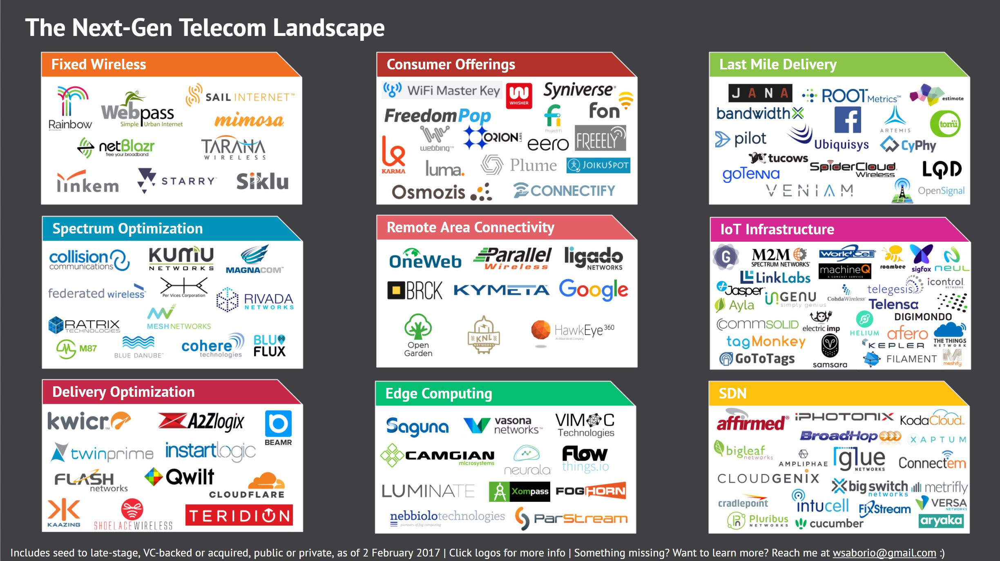

07. The next gen telecom landscape
Posted 2017-01-23

(You can see a higher-res and “clickable link” version of the landscape here.)
I tried to capture here any companies or corporate initiatives working in what I’m calling next-gen telecom, from incubation stage to VC-backed to acquired and even some public companies, to try and be somewhat exhaustive. To help give some structure to all this activity, I thought in terms of 9 “sub-sectors” that help capture what I mean by next-gen telecom. I hope to more thoroughly discuss these sub-sectors in a future post, but they should be fairly straightforward (or at least, easily Googleable). I also recognize that some of these sectors, like IoT and Software Defined Networking (SDN) are truly transformational and deserving of entire theses and sometimes overlap — but I’d argue that all these things, in conjunction, are redefining the telecommunications sector today, and that as such are important to be considered as a whole as well.
I’ll note, the map reflects what I’ve found as of today, 23 January 2017. I should stress this is a live document, so if you see something I’ve missed, or have an update, don’t hesitate to reach out to me at wsaborio@gmail.com. Also, if you’re curious to learn more, I created an underlying data set of these companies and some of their latest financing rounds/acquirers; shoot an email and I can share.
So, a few thoughts on this.
What do I mean by “next-gen telecom”?
I’ll start by explaining what I mean by telecom. In my mind, that’s any hardware, software, and/or service that primarily carries, or facilitates carrying, information. That includes a lot, from towers and radios and fiber lines and processors, to the networks that ride on all that, to the software that optimizes data traffic and computation on those networks. In other words, I’m thinking of all the supporting, ethereal “tubes” that pick up, carry, and deliver your data, or that hasten that delivery.
Now, just as importantly, what do I not mean by telecom? By this I’m referring to hardware, software, and services that primarily generate information. That also includes a lot, from messaging apps and other over-the-top (OTT) services, IoT sensors that don’t contribute a unique networking technology, wearables, etc. Also, for purposes of this analysis, I’m not capturing here companies that mainly focus on developing or manufacturing hardware components (e.g., semiconductors, smartphone radios).
And finally, what do I mean by next-gen? This is a little squishy, and I’m kind of using it as a catch-all for new and interesting companies working to disrupt or optimize existing networks and architectures. I know, it’s very vague, and there’s a certain Stewartian “I know it when I see it” test I’m using here, but as you can probably see, these are companies working at the shifting edges of the core network operator and ISP model of connecting millions of users’ homes and mobile devices to the internet. They all, in some way, address a changing set of needs for better and greater connectivity.
Why do this?
When I tell people I’m interested in telecom start-up activity, I’m often met with a quizzical look. And I get it. When someone says telecom, images of AT&T, Comcast, Qualcomm, and other massive corporations come to mind. How is there room for startups in one of the world’s most consolidated and mature industries?
But, as I noted in a previous post, there are rising, and very strong, dynamics that are opening space for new companies: the disaggregation and open-sourcing of infrastructure, the explosion of data generated and an ensuing strain on infrastructure, the entry of Internet giants, the need for greater computing power throughout a network, among others. Each of these trends represents a change, and potentially a threat, to the business model of established telecom players, and together represent a “next generation” of telecom needs.
Lastly, I think it’s important to recognize there’s a lot of entrepreneurship in spaces that aren’t sexy. This stuff isn’t a new social network, a better messaging app, a cooler VR platform, or even a smarter algorithm. But it does facilitate literally all of that, and for that I think it’s as crucial a sector to consider for disruption and improvement as any.
Some reflections
- Corporate venture capital (CVC) loves this stuff
My guess is that if anyone would firmly agree with my above assumptions, it’s established telecom CVCs. In looking at the notable investors in and eventual acquirers of many of the mapped companies, the same names keep popping up: Qualcomm Ventures, Verizon Ventures, Softbank, Cisco, etc. In software-defined networking (SDN), for instance, Cisco has snapped up multiple companies to build out their capabilities in the space.
This makes sense. Scale matters, and a lot of times these startups, if they’re not actually selling goods and services to these established players, they’re reliant on some of their platforms and technologies. “Strategic investment”, in this case, makes a lot of strategic and financial sense. However, it does raise the question of why traditional (i.e., non-corporate) VCs haven’t entered these spaces more aggressively, given the clear, keen interest of telco corpdev in the area.
- Policy matters
It’s clear that this sector is probably one of the more sensitive to regulation and policy. Companies in the spectrum optimization world, for instance, benefit from it; that the FCC doesn’t make more government bandwidth available for “innovative” uses means the need for optimization technology is that much higher. On the other hand, companies working on fixed wireless solutions with technologies like the millimeter wave band would greatly benefit from better spectrum availability for reaching end consumers. In another case, the devoted IoT network model (like France’s SigFox) can likely work in certain countries with dedicated, or at least open, spectrum resources for M2M; in the U.S., that spectrum just isn’t available (yet?) so developing this model here, now, may not make sense. At any rate, it’s important for any company in the market to understand current policy positions.
Which, according to experts I spoke to, are pretty unclear right now. The incoming administration doesn’t have a clear position on critical questions like the proposed AT&T-TWC merger or spectrum deregulation. That said, looking at the positions of influential players in the FCC like incoming Chairman Ajit Pai and Chief of Strategic Planning and Policy Analysis Paul de Sa start to highlight potential positions: loosening of net neutrality rules, increased infrastructure improvement spending. One thing is for sure: change and money are always decent catalysts for opportunity.
- Coordination matters
One challenge facing many of these companies is the need for standard coordination and scale. In many cases — from developing the right IoT protocols, to making a bet on what kind of edge/fog computing architecture to deploy, to developing the most appropriate spectrum optimization technology — all depend, in some way, on what everyone else in the industry is doing.
This feeds back, again, to the importance of scale, and the interest of CVCs in staking claims in any new tech or standard. However, this does highlight success factors for entrepreneurs in the space: “future-proofing” designs, engineering for interoperability, and creating strong industry partnerships.
Further questions
Like I mentioned, if there’s anything I’ve learned in this process, it’s how little I know. I’m going to continue looking for new companies in the space (and again, please reach out at wsaborio@gmail.com if I’m missing something!), reaching out to industry experts and startups for their insights, and generally seeking to better understand current challenges and opportunities. I’d also like to better think through how these different sub-sectors impact one another; for instance, developments in edge computing will probably drive the IoT value proposition and thus adoption and deployment.
’Til next time.